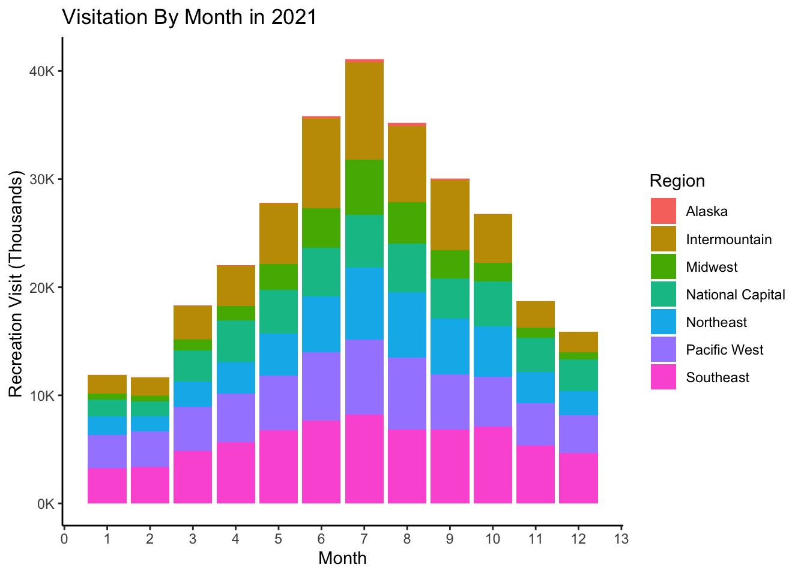

National Park Presentation
Data Visualization Final Project 2022
Gabrielle Scibelli
1 Project Overview
This is the link for the final paper. Click here.
1.1 Motivation For The Project
I want to look at National Park data for my research project. The National Parks are an important part of the United States and function as areas of land that are preserved by the national government. They can have historical elements, or be a place to enjoy the wonderful views they have to offer. I have been to several National Parks myself. I would like to look at the data to :
Find which parks have the most visitors each year and if visitation in the parks is increasing or decreasing.
Identify what could have caused these spikes and peaks in visitation.
Explore which regions of the United States have the most parks.
Determine if certain parks contribute more to the economy.
Look at the impacts COVID-19 had on visitation.
1.2 Background Knowledge
The National Park Service is primarily funded by Congress, but also is funded through park entrance fees and some private philanthropies. For years the National Park Service has lacked the funding it needs to maintain and protect these national parks. Since the first National Park, Yellowstone, was established in 1872, there have been an additional 400 National Parks with over 20,000 employees added. This research is important, because it can help determine how much funding the National Parks need and which ones need more attention than others. It can help us discover how different issues have affected these National Parks. It can also help us see if certain parks should be closed during certain times of the year in order to have a more efficient and effective budget for these parks. We know that national parks provide peaceful places to enjoy scenery and give wildlife and native plants a safe home which maintains our ecosystem. Economically, national parks create jobs in tourism, park management and capital works and draw visitors to regional areas where they spend their money in local towns.
1.3 Summary of the Modeling Result
In my model I was able to figure out how visitation, park size, and park type correlated to the amount of visitor spending and economic contribution of the parks. If I had more time, I would’ve liked to gather data on climate change, stocks, and financial patterns to see how these factors could have affected visitation at parks. I was able to see that visitation decreased in 2020 due to the COVID-19 pandemic.
2 Data Summary
I was able to collect 30 years of data from the National Park Service. I collected Public Use Data data from 1979 to 2021. I also collected data on the amount of trails located in each park from Kaggle, All Trails Data. Additionally I was able to find Visitor Spending Data for 2020.
2.1 All Trails Data
- This data is from the All Trails website, which is a platform containing all hiking trails located in each National Park. It includes the coordinates of each trail, park name, state name, and city name. Additionally this data provides variables like the average rating, length, elevation gain, and difficulty rating for each trail.
2.1.1 Summary Statistics: All Trails
#Read csv file
alltrails <- read_csv("/Users/gabriellescibelli/Modified2AllTrails.csv")
#first 6 rows
head(alltrails)#Number of Trails per state
TrailsperPark <-alltrails%>%
group_by(state_name)%>%
summarize(trails = n_distinct(name))
TrailsperPark%>%
arrange(desc(trails))nvars <- format(round(ncol(alltrails), 0), nsmall = 0, big.mark = ",")
nobs <- format(round(nrow(alltrails), 0), nsmall = 0, big.mark = ",")The number of variables is 21; the number of observations 3,313.
2.2 National Park Service Data
2.2.1 Public Use Statistics (1979-2021)
- Public Use Statistics give the number of visits per month and year for each National Park. This data includes Recreation and Non-Recreation Visits, as well as the hours the park was open for each group and the number of visitors who camped, stayed overnight, etc.
19 Variables 173563 Observations
index
![image](data:image/png;base64,
iVBORw0KGgoAAAANSUhEUgAAAJcAAAANCAYAAACkYvxcAAAEGWlDQ1BrQ0dDb2xvclNwYWNlR2VuZXJpY1JHQgAAOI2NVV1oHFUUPrtzZyMkzlNsNIV0qD8NJQ2TVjShtLp/3d02bpZJNtoi6GT27s6Yyc44M7v9oU9FUHwx6psUxL+3gCAo9Q/bPrQvlQol2tQgKD60+INQ6Ium65k7M5lpurHeZe58853vnnvuuWfvBei5qliWkRQBFpquLRcy4nOHj4g9K5CEh6AXBqFXUR0rXalMAjZPC3e1W99Dwntf2dXd/p+tt0YdFSBxH2Kz5qgLiI8B8KdVy3YBevqRHz/qWh72Yui3MUDEL3q44WPXw3M+fo1pZuQs4tOIBVVTaoiXEI/MxfhGDPsxsNZfoE1q66ro5aJim3XdoLFw72H+n23BaIXzbcOnz5mfPoTvYVz7KzUl5+FRxEuqkp9G/Ajia219thzg25abkRE/BpDc3pqvphHvRFys2weqvp+krbWKIX7nhDbzLOItiM8358pTwdirqpPFnMF2xLc1WvLyOwTAibpbmvHHcvttU57y5+XqNZrLe3lE/Pq8eUj2fXKfOe3pfOjzhJYtB/yll5SDFcSDiH+hRkH25+L+sdxKEAMZahrlSX8ukqMOWy/jXW2m6M9LDBc31B9LFuv6gVKg/0Szi3KAr1kGq1GMjU/aLbnq6/lRxc4XfJ98hTargX++DbMJBSiYMIe9Ck1YAxFkKEAG3xbYaKmDDgYyFK0UGYpfoWYXG+fAPPI6tJnNwb7ClP7IyF+D+bjOtCpkhz6CFrIa/I6sFtNl8auFXGMTP34sNwI/JhkgEtmDz14ySfaRcTIBInmKPE32kxyyE2Tv+thKbEVePDfW/byMM1Kmm0XdObS7oGD/MypMXFPXrCwOtoYjyyn7BV29/MZfsVzpLDdRtuIZnbpXzvlf+ev8MvYr/Gqk4H/kV/G3csdazLuyTMPsbFhzd1UabQbjFvDRmcWJxR3zcfHkVw9GfpbJmeev9F08WW8uDkaslwX6avlWGU6NRKz0g/SHtCy9J30o/ca9zX3Kfc19zn3BXQKRO8ud477hLnAfc1/G9mrzGlrfexZ5GLdn6ZZrrEohI2wVHhZywjbhUWEy8icMCGNCUdiBlq3r+xafL549HQ5jH+an+1y+LlYBifuxAvRN/lVVVOlwlCkdVm9NOL5BE4wkQ2SMlDZU97hX86EilU/lUmkQUztTE6mx1EEPh7OmdqBtAvv8HdWpbrJS6tJj3n0CWdM6busNzRV3S9KTYhqvNiqWmuroiKgYhshMjmhTh9ptWhsF7970j/SbMrsPE1suR5z7DMC+P/Hs+y7ijrQAlhyAgccjbhjPygfeBTjzhNqy28EdkUh8C+DU9+z2v/oyeH791OncxHOs5y2AtTc7nb/f73TWPkD/qwBnjX8BoJ98VQNcC+8AAAA4ZVhJZk1NACoAAAAIAAGHaQAEAAAAAQAAABoAAAAAAAKgAgAEAAAAAQAAAJegAwAEAAAAAQAAAA0AAAAAFfO3WAAAA69JREFUWAntmMtOKkEQhgsdvCOJidHoMxhj2LhhxVpfAEjcutewc+Nz+DK8gRsTtyZeYOEFEPCKfmVq0vQZEDVyOBwq6eme7r+runv+ruqe2OXlZUsc2dzclPv7e4nFYvL8/CyVSkVeXl4UsbKyIhcXFxIEgczOzko8Hldcs9mUWq0mrVabKm0HBx55eHiQarWqZfcxPT2t+sbHx9UmOPT5Am5qakr1vb6+qj7G6tsFk8vl5PDw0Fcxeu/jCgTLy8tt5iDC2NiYksb/aBDLBAwJ6YSnDZJCGnR1wkFeyALO1Ut/V8C47ej2x2j46+tred84srGxYVWjvM8r8OFS+my0H+aKxaLs7e1JPp+Xp6cnJWW9XpfV1VU5Pz8XvCBknZiY0OFAUsoQHG/daDQUQ1+wCMRGTB/edWZmRhNe/vHxMfTmbBgjfzablcnJSe37Pz2GllyQ5eTkRAqFghIlKhxDDMI2hIJoECoKNzc3pwQDB2kgKeHYF3DoBAfZDLe7uytnZ2eytLTkdxnq94+tOKRThGCWoqZobeSQixQl1LtYylHi6rEyODza3d1dVJehrmvzXISLTgs31KvQh8mdnp5qmMTzcRFCCJsIYRZvx8WINrwelxKwi4uLmt/c3GhYhqhgufSsra1p/0F9BMfHx+HY0um0Tthud0wuimzU0WaL8xmOxUO64VhQxHTri/egzXDdPE2vOHSgz2x281w/xW1vb+tsIAbhkzMYZzj0Eo5Jrn27kYNlnSEeGEIt40WOjo4klUppeRAfwfr6ejgudgNnBibGhJisESgEvReoY5FcElJnkzas4diN9gE74dAFDpuQMEroC44EzojmY32ckdvH8XHRxVzo0yvODvaf6YvCMTfbZKyJrYtLLPQyN+rwVOgBZwQ3u1xO3O9n9YOSD/WZa1AW+bfGUS6X/9jQv2XrO3rbzlzfUTDq8/dWYGdnR/b392VhYUF/o+Dh8L78IiGEEkrxygi3YhJnObw0HpEQy28X8578iiElk8nwFw36uEGji8iGDZLdjNGHJBIJOTg4kEwmo+88RuQKl+LfKxA2S6WSEsnOcEYuyOMKF4L5+Xk96xm5IKF/FIA41Nt/OSOXfwS5vb1VQoGDnOC2traUsGZ3FBZtJUb5j1bAvJ+rJLi6ugrfAbAb7HBJTl2U9IpzjX6mzw66Zt+3646vm66v4tjJvej7Cs7m4s+Bdxsf5V7sgutFn+kljxJskZBOGGsznOXayXvQxrgQyuh0+fQGCd4kPhPH4CgAAAAASUVORK5CYII=)
| n | missing | distinct | Info | Mean | Gmd | .05 | .10 | .25 | .50 | .75 | .90 | .95 |
|---|---|---|---|---|---|---|---|---|---|---|---|---|
| 173563 | 0 | 64657 | 1 | 24513 | 18564 | 2194 | 4416 | 10948 | 21919 | 36072 | 47792 | 55980 |
Park
| n | missing | distinct |
|---|---|---|
| 173563 | 0 | 372 |
| lowest : | Abraham Lincoln Birthplace NHP | Acadia NP | Adams NHP | African Burial Ground NM | Agate Fossil Beds NM |
| highest: | Wupatki NM | Yellowstone NP | Yosemite NP | Yukon-Charley Rivers NPRES | Zion NP |
Unit Code
| n | missing | distinct |
|---|---|---|
| 173563 | 0 | 372 |
Park Type
![image](data:image/png;base64,
iVBORw0KGgoAAAANSUhEUgAAADoAAAANCAYAAAD4xH09AAAEGWlDQ1BrQ0dDb2xvclNwYWNlR2VuZXJpY1JHQgAAOI2NVV1oHFUUPrtzZyMkzlNsNIV0qD8NJQ2TVjShtLp/3d02bpZJNtoi6GT27s6Yyc44M7v9oU9FUHwx6psUxL+3gCAo9Q/bPrQvlQol2tQgKD60+INQ6Ium65k7M5lpurHeZe58853vnnvuuWfvBei5qliWkRQBFpquLRcy4nOHj4g9K5CEh6AXBqFXUR0rXalMAjZPC3e1W99Dwntf2dXd/p+tt0YdFSBxH2Kz5qgLiI8B8KdVy3YBevqRHz/qWh72Yui3MUDEL3q44WPXw3M+fo1pZuQs4tOIBVVTaoiXEI/MxfhGDPsxsNZfoE1q66ro5aJim3XdoLFw72H+n23BaIXzbcOnz5mfPoTvYVz7KzUl5+FRxEuqkp9G/Ajia219thzg25abkRE/BpDc3pqvphHvRFys2weqvp+krbWKIX7nhDbzLOItiM8358pTwdirqpPFnMF2xLc1WvLyOwTAibpbmvHHcvttU57y5+XqNZrLe3lE/Pq8eUj2fXKfOe3pfOjzhJYtB/yll5SDFcSDiH+hRkH25+L+sdxKEAMZahrlSX8ukqMOWy/jXW2m6M9LDBc31B9LFuv6gVKg/0Szi3KAr1kGq1GMjU/aLbnq6/lRxc4XfJ98hTargX++DbMJBSiYMIe9Ck1YAxFkKEAG3xbYaKmDDgYyFK0UGYpfoWYXG+fAPPI6tJnNwb7ClP7IyF+D+bjOtCpkhz6CFrIa/I6sFtNl8auFXGMTP34sNwI/JhkgEtmDz14ySfaRcTIBInmKPE32kxyyE2Tv+thKbEVePDfW/byMM1Kmm0XdObS7oGD/MypMXFPXrCwOtoYjyyn7BV29/MZfsVzpLDdRtuIZnbpXzvlf+ev8MvYr/Gqk4H/kV/G3csdazLuyTMPsbFhzd1UabQbjFvDRmcWJxR3zcfHkVw9GfpbJmeev9F08WW8uDkaslwX6avlWGU6NRKz0g/SHtCy9J30o/ca9zX3Kfc19zn3BXQKRO8ud477hLnAfc1/G9mrzGlrfexZ5GLdn6ZZrrEohI2wVHhZywjbhUWEy8icMCGNCUdiBlq3r+xafL549HQ5jH+an+1y+LlYBifuxAvRN/lVVVOlwlCkdVm9NOL5BE4wkQ2SMlDZU97hX86EilU/lUmkQUztTE6mx1EEPh7OmdqBtAvv8HdWpbrJS6tJj3n0CWdM6busNzRV3S9KTYhqvNiqWmuroiKgYhshMjmhTh9ptWhsF7970j/SbMrsPE1suR5z7DMC+P/Hs+y7ijrQAlhyAgccjbhjPygfeBTjzhNqy28EdkUh8C+DU9+z2v/oyeH791OncxHOs5y2AtTc7nb/f73TWPkD/qwBnjX8BoJ98VQNcC+8AAAA4ZVhJZk1NACoAAAAIAAGHaQAEAAAAAQAAABoAAAAAAAKgAgAEAAAAAQAAADqgAwAEAAAAAQAAAA0AAAAAk2LtWAAAAmNJREFUSA3VVT1rKlEQPS9GTEAIpBKMfyAgEbGSJCCIAe3sLPRnBHvBwiKRYCmSIiSQwla0sRAF0UKxCEGwEY2Kn4kaxY/3MgOCu/t4xqcpvLDsuXPPnJ3ZuXfur7e3t99YMSqVCgwGA25ubuBwOFawpctmsxknJye4v7+H3W5nQjgclhJ/0LKvUqlWyk8mE+YcHR3hO3yxoFwux8HBAfsqFApe/h8dse468711yAtuPp/HaDRaTHfivXain5+f0Ov1CIVCO5HgIsi1E6VtPJ/PMR6PFxo78V470Z3I6i9B7tN5WzVqtRpTyuUyCoUCY+rEYt/ZbAaZTCaRo+3e6/WY3+/3eV3sK3HasmH/7OxspeTx8TFzNBoNtFotY7VaDbHv6ekpXC4X3G63QPPw8BDUsYmvVCp5TewrcPiByVa3LlX+617eOEzaGR8fHxvrLAtsNdFl4U2wx+OBTqfbRELiK0iUKnJ1dQU6f5uOu7s7xGKxb8tQJ1/czZ1OB/T8a2QyGZyfn2M4HApor6+voGNVKpUEdkGixWKRgyMyffjh4UEiJPD+msTjcTSbTbEZt7e3eHx8lNiXDdFoFE9PT2y6vr7GxcXF8rIEd7tdRCIRtlNTTCaTaLVaeHl5weXlJf8cKlK1WpUUay+dTsNkMjGZnGi0220kEgk4nU48Pz+j0WiwnTpnvV5n/P7+DtoBFosFPp+PMf2cwWDAeDqdgrotcejupWoRpvuXHsJ+vx9er5cxdXSy0UMapEU4GAzCaDQyDgQCsFqtXC2KhQbFlkqlON5cLsexk51yoYLZbDZks1n8AbhRNJ+xfIblAAAAAElFTkSuQmCC)
| n | missing | distinct |
|---|---|---|
| 173563 | 0 | 19 |
| lowest : | International Historic Site | National Battlefield | National Battlefield Park | National Historic Site | National Historical Park |
| highest: | National River | National Seashore | National Wild & Scenic River | Park (Other) | Park Type |
Region
![image](data:image/png;base64,
iVBORw0KGgoAAAANSUhEUgAAABkAAAANCAYAAABcrsXuAAAEGWlDQ1BrQ0dDb2xvclNwYWNlR2VuZXJpY1JHQgAAOI2NVV1oHFUUPrtzZyMkzlNsNIV0qD8NJQ2TVjShtLp/3d02bpZJNtoi6GT27s6Yyc44M7v9oU9FUHwx6psUxL+3gCAo9Q/bPrQvlQol2tQgKD60+INQ6Ium65k7M5lpurHeZe58853vnnvuuWfvBei5qliWkRQBFpquLRcy4nOHj4g9K5CEh6AXBqFXUR0rXalMAjZPC3e1W99Dwntf2dXd/p+tt0YdFSBxH2Kz5qgLiI8B8KdVy3YBevqRHz/qWh72Yui3MUDEL3q44WPXw3M+fo1pZuQs4tOIBVVTaoiXEI/MxfhGDPsxsNZfoE1q66ro5aJim3XdoLFw72H+n23BaIXzbcOnz5mfPoTvYVz7KzUl5+FRxEuqkp9G/Ajia219thzg25abkRE/BpDc3pqvphHvRFys2weqvp+krbWKIX7nhDbzLOItiM8358pTwdirqpPFnMF2xLc1WvLyOwTAibpbmvHHcvttU57y5+XqNZrLe3lE/Pq8eUj2fXKfOe3pfOjzhJYtB/yll5SDFcSDiH+hRkH25+L+sdxKEAMZahrlSX8ukqMOWy/jXW2m6M9LDBc31B9LFuv6gVKg/0Szi3KAr1kGq1GMjU/aLbnq6/lRxc4XfJ98hTargX++DbMJBSiYMIe9Ck1YAxFkKEAG3xbYaKmDDgYyFK0UGYpfoWYXG+fAPPI6tJnNwb7ClP7IyF+D+bjOtCpkhz6CFrIa/I6sFtNl8auFXGMTP34sNwI/JhkgEtmDz14ySfaRcTIBInmKPE32kxyyE2Tv+thKbEVePDfW/byMM1Kmm0XdObS7oGD/MypMXFPXrCwOtoYjyyn7BV29/MZfsVzpLDdRtuIZnbpXzvlf+ev8MvYr/Gqk4H/kV/G3csdazLuyTMPsbFhzd1UabQbjFvDRmcWJxR3zcfHkVw9GfpbJmeev9F08WW8uDkaslwX6avlWGU6NRKz0g/SHtCy9J30o/ca9zX3Kfc19zn3BXQKRO8ud477hLnAfc1/G9mrzGlrfexZ5GLdn6ZZrrEohI2wVHhZywjbhUWEy8icMCGNCUdiBlq3r+xafL549HQ5jH+an+1y+LlYBifuxAvRN/lVVVOlwlCkdVm9NOL5BE4wkQ2SMlDZU97hX86EilU/lUmkQUztTE6mx1EEPh7OmdqBtAvv8HdWpbrJS6tJj3n0CWdM6busNzRV3S9KTYhqvNiqWmuroiKgYhshMjmhTh9ptWhsF7970j/SbMrsPE1suR5z7DMC+P/Hs+y7ijrQAlhyAgccjbhjPygfeBTjzhNqy28EdkUh8C+DU9+z2v/oyeH791OncxHOs5y2AtTc7nb/f73TWPkD/qwBnjX8BoJ98VQNcC+8AAAA4ZVhJZk1NACoAAAAIAAGHaQAEAAAAAQAAABoAAAAAAAKgAgAEAAAAAQAAABmgAwAEAAAAAQAAAA0AAAAA7luEJgAAAYJJREFUOBGtVLuqwkAQPTcuWgnaiKWlVtb+gPkDe7/Bzh/wFwTLNGlsBEFsLNL7qEQQFUEUH+CDiK/odQazpEi4LtxpZuacMzNsdrI/y+XyhY8VCgVcLhc0Gg0X+hcvksmkbBSJRPB8PuHFJOkJDMOAaZpoNpseNDgUwVQw0+/3YVlWsODD3G43dLtdaH8qvxDsdjtfVb1eRy6XCx6y3W5RqVTweDx8G7jgYrFAIpFAu912Iemv1yvHgSfpdDool8sYj8eyyC84Ho98j/v93o9mTAwGA0meTifQdMKm0ynjw+GQMSl6B+v1Go7jsG4ymTA1m8049+rm8zmnIpvNSjwajUIIAcJGoxHj6XQamUwGpVIJuq4jn8/z5wmFQqwLh8OsS6VSnMtm76DX63H69XbVajUuoCGqpt3vd9UaZb0Wi8XQarWUC1UKtPP5jNVqpVKjrOU7ORwOPIg2i/5SGuqu5GazQTwe5zW1bZs58vT8kI54MtJTXq1WQc9TsVgE9SX7BcWrsx6nf2TVAAAAAElFTkSuQmCC)
| n | missing | distinct |
|---|---|---|
| 173563 | 0 | 8 |
| lowest : | Alaska | Intermountain | Midwest | National Capital | Northeast |
| highest: | National Capital | Northeast | Pacific West | Region | Southeast |
Value Alaska Intermountain Midwest National Capital
Frequency 7032 39458 23678 15105
Proportion 0.041 0.227 0.136 0.087
Value Northeast Pacific West Region Southeast
Frequency 33817 25472 3 28998
Proportion 0.195 0.147 0.000 0.167
State
![image](data:image/png;base64,
iVBORw0KGgoAAAANSUhEUgAAAJcAAAANCAYAAACkYvxcAAAEGWlDQ1BrQ0dDb2xvclNwYWNlR2VuZXJpY1JHQgAAOI2NVV1oHFUUPrtzZyMkzlNsNIV0qD8NJQ2TVjShtLp/3d02bpZJNtoi6GT27s6Yyc44M7v9oU9FUHwx6psUxL+3gCAo9Q/bPrQvlQol2tQgKD60+INQ6Ium65k7M5lpurHeZe58853vnnvuuWfvBei5qliWkRQBFpquLRcy4nOHj4g9K5CEh6AXBqFXUR0rXalMAjZPC3e1W99Dwntf2dXd/p+tt0YdFSBxH2Kz5qgLiI8B8KdVy3YBevqRHz/qWh72Yui3MUDEL3q44WPXw3M+fo1pZuQs4tOIBVVTaoiXEI/MxfhGDPsxsNZfoE1q66ro5aJim3XdoLFw72H+n23BaIXzbcOnz5mfPoTvYVz7KzUl5+FRxEuqkp9G/Ajia219thzg25abkRE/BpDc3pqvphHvRFys2weqvp+krbWKIX7nhDbzLOItiM8358pTwdirqpPFnMF2xLc1WvLyOwTAibpbmvHHcvttU57y5+XqNZrLe3lE/Pq8eUj2fXKfOe3pfOjzhJYtB/yll5SDFcSDiH+hRkH25+L+sdxKEAMZahrlSX8ukqMOWy/jXW2m6M9LDBc31B9LFuv6gVKg/0Szi3KAr1kGq1GMjU/aLbnq6/lRxc4XfJ98hTargX++DbMJBSiYMIe9Ck1YAxFkKEAG3xbYaKmDDgYyFK0UGYpfoWYXG+fAPPI6tJnNwb7ClP7IyF+D+bjOtCpkhz6CFrIa/I6sFtNl8auFXGMTP34sNwI/JhkgEtmDz14ySfaRcTIBInmKPE32kxyyE2Tv+thKbEVePDfW/byMM1Kmm0XdObS7oGD/MypMXFPXrCwOtoYjyyn7BV29/MZfsVzpLDdRtuIZnbpXzvlf+ev8MvYr/Gqk4H/kV/G3csdazLuyTMPsbFhzd1UabQbjFvDRmcWJxR3zcfHkVw9GfpbJmeev9F08WW8uDkaslwX6avlWGU6NRKz0g/SHtCy9J30o/ca9zX3Kfc19zn3BXQKRO8ud477hLnAfc1/G9mrzGlrfexZ5GLdn6ZZrrEohI2wVHhZywjbhUWEy8icMCGNCUdiBlq3r+xafL549HQ5jH+an+1y+LlYBifuxAvRN/lVVVOlwlCkdVm9NOL5BE4wkQ2SMlDZU97hX86EilU/lUmkQUztTE6mx1EEPh7OmdqBtAvv8HdWpbrJS6tJj3n0CWdM6busNzRV3S9KTYhqvNiqWmuroiKgYhshMjmhTh9ptWhsF7970j/SbMrsPE1suR5z7DMC+P/Hs+y7ijrQAlhyAgccjbhjPygfeBTjzhNqy28EdkUh8C+DU9+z2v/oyeH791OncxHOs5y2AtTc7nb/f73TWPkD/qwBnjX8BoJ98VQNcC+8AAAA4ZVhJZk1NACoAAAAIAAGHaQAEAAAAAQAAABoAAAAAAAKgAgAEAAAAAQAAAJegAwAEAAAAAQAAAA0AAAAAFfO3WAAABZ9JREFUWAntWVsoZl8UX39MkSQPGg9TiJDLzJs0EynJy5TrA0PhQREjuT16GKGU+5BklJHkEkmkxl0xw0zjktuQ+/02jLtx+c9v999f+3zzfcb3ffxNsuqcs89ee6+91trrts/5Z2Vl5ZI0gODgYFpeXqYPHz5oQOVh6n3UgI6JiYnKcnV1dZGnpydNTk6Srq4uPXr0iNSho/LC93DC+/fvydnZmczNze+ddFrqSLS0tEQ7Ozu0vb2tzvSHOYIGQkNDqaysTOi5P021jEsV8aOjowkKfADFGri4uCBcdw1TU1OUmZl5o2xIjMvPz4/q6+tvdIGJiQnCdVdwealRSXmjbK+vr6tNr729nR4/fswyhtpErphYV1dHcXFxdHx8fMUo1VAS42poaKBPnz6pRuEvH+3u7k4JCQn08+dP5pm7u7t3wnFHRwerS6enp9Vaf35+nmCcKEc0hbCwMIqNjWVkBgYG6OzsjLgT8qema2C+zuDgoIwOwvPa2hqJfTKk0Jibm2Nv4+PjhM06PDwkMBkREUEhISHk5OQkG723t0cHBwf0+fNn8vX1ZRttZ2dHULaPj49s3G01EO51dHSIe6a2tja5urre1nJK6UI/2Lj+/n6CTkRYXV39o85hXIDR0VGmc3G+qu2+vj7S19entrY2cnNzo7S0NAIPgKGhIXZIk6cJo/727Rs5OjrKo5S+6zx79kyG1NLSYqFX7JMhhQYEBNjY2JChoSH9+PGDrK2t6ePHj+Tt7U3ifAMDAzbWwsKCoCAYMJh88+YNRUVFkbGxMcPf1g2nWSMjI7KysmJLmJmZSfhTZ92RkREmA2S9LszOzrKh0JOoH3TipC3fxwYLNxgnwNbWliCDJgDDwr5YWloyMki32HvA06dPSU9Pj7XFW2pqKiUlJbEoJ/Zf1ZakRUUDT05OmPEowqnbxwtY/uR03r59K/Mg3ndXT6RRZZCfn0+RkZHK0H9lPxwiJiZGlv5UZRKp8/z8XOl8ZDDuAJy2UuMCIcDr16/Jw8ODj7+1J9Ix1kLdd9eANOHg4CBhY2Njg4KCgghPpDd5x5AMVuMFqbK0tPS3zUNWuA6gzLC3t6ejoyOqqamhqqoqybTW1lbKycnROKVKiAovWVlZ7Hud0EUKjaunp4eFzcXFRcbM/1EE80JSftOgkJKSEpFnmpmZocLCQtYXHx9P2dnZzKsyMjJU/vaWnp5OjY2NTE4UuiiaYei4AF++fGHRFJ5fXl7Oah6G+O9WWVlJqD0XFhbo5cuXtLm5KaKv3W5ubmb1Kj5Mc4CDP3nyhIqKiniX0idO5OARe1VQUMAuRYO5nhXheB/0CVn/BKi1UWfjD83p6Sm7xDkKjQuKhQdo8pH0ukr+9fvpt1TY1NTEvBCpqaKigqqrqxnPKEBxVIZXQigI1NLSQp2dnYTCHYaGd4x//vy5KKekDeOsra1lfdgIePrY2BgVFxfT169fJWO9vLwoJSVF1ie/OeADm486FEYKPqBsfih68eIFi0gyAr8aoOfv7y92ySIhnAv8gC+kIkQ0+X3AiRMGDeju7qb9/X0JLXkeJchrvOCvAY980LE8BAQEUHJyMpMVTq7sC4MWTgn8AlNg9Pv374weDARGBiExxtTUlHJzc2XHYaQIbDaMgJ82oAxEGhSpUDhqNjDIIwHCPI+EiBKvXr2iwMBAFjGwKHA4WcILYQSYCxrYdJxsQJunChgm1gYP/BsSeIewvb29jCfwDhm4sQOPEI4UB54RHeCBW1tbTGZsJE632GTgQRvr8Q3GE+Mxj88XDQB0EhMTCUYJPCIfToiiTvEOGYEHQOf8EwN0+u7dO0Jdx/GgL+LDw8MJ/3RhZC4uLpSXlyfRKdc5Mg9+08HhuM6wD1ynXGfQOdYAYE2u0+HhYZbB4Kwinssk6hQywH4wn1//Al0vmUoeSII4AAAAAElFTkSuQmCC)
| n | missing | distinct |
|---|---|---|
| 173563 | 0 | 55 |
Year
![image](data:image/png;base64,
iVBORw0KGgoAAAANSUhEUgAAAIUAAAANCAYAAACHOa2JAAAEGWlDQ1BrQ0dDb2xvclNwYWNlR2VuZXJpY1JHQgAAOI2NVV1oHFUUPrtzZyMkzlNsNIV0qD8NJQ2TVjShtLp/3d02bpZJNtoi6GT27s6Yyc44M7v9oU9FUHwx6psUxL+3gCAo9Q/bPrQvlQol2tQgKD60+INQ6Ium65k7M5lpurHeZe58853vnnvuuWfvBei5qliWkRQBFpquLRcy4nOHj4g9K5CEh6AXBqFXUR0rXalMAjZPC3e1W99Dwntf2dXd/p+tt0YdFSBxH2Kz5qgLiI8B8KdVy3YBevqRHz/qWh72Yui3MUDEL3q44WPXw3M+fo1pZuQs4tOIBVVTaoiXEI/MxfhGDPsxsNZfoE1q66ro5aJim3XdoLFw72H+n23BaIXzbcOnz5mfPoTvYVz7KzUl5+FRxEuqkp9G/Ajia219thzg25abkRE/BpDc3pqvphHvRFys2weqvp+krbWKIX7nhDbzLOItiM8358pTwdirqpPFnMF2xLc1WvLyOwTAibpbmvHHcvttU57y5+XqNZrLe3lE/Pq8eUj2fXKfOe3pfOjzhJYtB/yll5SDFcSDiH+hRkH25+L+sdxKEAMZahrlSX8ukqMOWy/jXW2m6M9LDBc31B9LFuv6gVKg/0Szi3KAr1kGq1GMjU/aLbnq6/lRxc4XfJ98hTargX++DbMJBSiYMIe9Ck1YAxFkKEAG3xbYaKmDDgYyFK0UGYpfoWYXG+fAPPI6tJnNwb7ClP7IyF+D+bjOtCpkhz6CFrIa/I6sFtNl8auFXGMTP34sNwI/JhkgEtmDz14ySfaRcTIBInmKPE32kxyyE2Tv+thKbEVePDfW/byMM1Kmm0XdObS7oGD/MypMXFPXrCwOtoYjyyn7BV29/MZfsVzpLDdRtuIZnbpXzvlf+ev8MvYr/Gqk4H/kV/G3csdazLuyTMPsbFhzd1UabQbjFvDRmcWJxR3zcfHkVw9GfpbJmeev9F08WW8uDkaslwX6avlWGU6NRKz0g/SHtCy9J30o/ca9zX3Kfc19zn3BXQKRO8ud477hLnAfc1/G9mrzGlrfexZ5GLdn6ZZrrEohI2wVHhZywjbhUWEy8icMCGNCUdiBlq3r+xafL549HQ5jH+an+1y+LlYBifuxAvRN/lVVVOlwlCkdVm9NOL5BE4wkQ2SMlDZU97hX86EilU/lUmkQUztTE6mx1EEPh7OmdqBtAvv8HdWpbrJS6tJj3n0CWdM6busNzRV3S9KTYhqvNiqWmuroiKgYhshMjmhTh9ptWhsF7970j/SbMrsPE1suR5z7DMC+P/Hs+y7ijrQAlhyAgccjbhjPygfeBTjzhNqy28EdkUh8C+DU9+z2v/oyeH791OncxHOs5y2AtTc7nb/f73TWPkD/qwBnjX8BoJ98VQNcC+8AAAA4ZVhJZk1NACoAAAAIAAGHaQAEAAAAAQAAABoAAAAAAAKgAgAEAAAAAQAAAIWgAwAEAAAAAQAAAA0AAAAA1p6+4gAABYxJREFUWAntmU1IVU0Yxx/tWlpaapoaRZciEwxdJW7cGNgmRFwIiljQQgsKKmhXtE4RgkDNTW4EEVyooRIYKYgUaqZS9qWh5keaX2ma5rzze2gul4QX3mjhC/eBc+/PmXNm/vPMzDn/c5XJyUmz04/nz5+rxomJCdPY2Kg8NjZmmpublT98+GAaGhqUX79+berr65VbW1vNnTt3lCsqKsyFCxeUy8rKzJUrV5Rv3rxpiouLlQsLC83ly5eV09PTzaVLl5SPHz/uK4+IiDDXr1839B8cHKztDw4OGhEx9+7dM11dXcqVlZWmpaVFuba21tTV1Sk/fvzYPHz4UPnZs2emtLRUua+vz9y+fVuZ8Vy7ds14PB7t/+LFi+bgwYPKubm5xuv1Kp89e9akpqYqnzlzxmRkZCgnJiaa8+fPKyckJJj8/HzlvXv3mpKSEjM+Pq793Lp1S8t/n//g+Ph4+ZMjLi5OYmNj9drQ0FDZvXu38vv37+Xz58/KPT09MjU1pdze3i4zMzPKDx48kNHRUTl06JAUFRXJ0NCQ7N+/X7KysuTt27cSFBQkSUlJYpMjX758kbS0NBkZGRE74ZKdnS3T09NiF4rYgcv6+rrQtk2W7NmzR5qamiQvL09iYmLk6dOnYpOufb58+VLa2tqUX7x4odcwbjuh0t/fr+Vo//jxo/LCwoJ8+/ZNeXV1Vba2tpQ3NjZ0rIydMsYOE+Hh4WInT5nxREdHK0dGRgoHERUV5WM0HjhwQMvJhV1wyuiiLfIA79u3T+wCVA4LCxO7WJTpOyQkRJn8M37Op4w6eNeuXWIXgzJt0BblBP3Bvx/BWms/fv78qQnh7/n5eeno6NAqJuzRo0fK9+/fl5ycHOWrV6/KuXPnlO1KloKCAmW78+Tu3bvKN27ckPLycmW7u6S6ulrZ7iidvLW1NXny5In09vYKkzAwMCDDw8MyNzcni4uLuriYGGJ5eVl+/PihzELgIPhmogi+Nzc3xRij46EMDsR/y4BvUdTU1MipU6d0d1RVVUlmZqbuBBaEvZVpq0wau59gt3IXIFZWVvQ6mN3D8W+slYGPHZsB36LgFskuY+fxzZ2DXeaOHTuCgLC/ngHfovjrLQca/N9mwIPJIqwj1W+Ml3WjytRhDrlrwDzrea7DeAA8AczznjsMzB1naWlJmTL8CeXcfWZnZ5W5+/D4efXqlfaDMcW7ENbVy5s3b5Qxo9+/f1fGdLrHEmbU6eVcx7ThtNM22rmG/tGO54DR5LSjlccf5Xxj7mDqnXau43rKaY92nXb6c9rR4bR/+vTJ52swr5g84t27dzp2mHMZL0Eb5IGgbfJDnuiTvJE/GE0u12gn35Sj3Z2DduaHcubLaWce0U45gXbHWvDrw2NfaRQ7Ozv1+/Tp0+KYOlwxDhbGWeNyYdw0DhfGxeKIYZwuzhvGDeO2Yepx2zCJ5+0lJSVF+zx8+LAkJycrHz16VN88+MPr9cqRI0e0/MSJE74k21cu1UQFbyn2VVXPoY3u7m5l2kY7k0GfaMeVw2hy2tFK8inHmTvt1DvtXMf1nEN7tOu021c+n3a0ooc4duyYoJmwr7Q+vSdPnhTeIAjOZcIItPOGRNA2+SFP9EneXH7RRF4pRyubxmmnXRjtzA/MfDntzCPaKSfQ7lgLfn0EHh/+2QiwZiCwKAILYVsGAotiW0oCBYFFEVgD2zLgcT9A4WQJXC9vEwR1uFocN4zTxcHCOFxcOYwbxuXClFEH44YxQjBtcD2MseOXSpigP1wxwS+Z/LRN4KCdKfv69avPaGLOqCM4l2sI2vDXTh/0RT/+2tGENsr9tTMG/qbcXztj/hPtzkSiHZNH/Il2/znw1+4/B2jHBKPdfw78tTMHtMU5BLnCpNv/A+nhTOc/yTYn8hSvYW4AAAAASUVORK5CYII=)
| n | missing | distinct |
|---|---|---|
| 173563 | 0 | 44 |
Month
![image](data:image/png;base64,
iVBORw0KGgoAAAANSUhEUgAAACgAAAANCAYAAADbnyzoAAAEGWlDQ1BrQ0dDb2xvclNwYWNlR2VuZXJpY1JHQgAAOI2NVV1oHFUUPrtzZyMkzlNsNIV0qD8NJQ2TVjShtLp/3d02bpZJNtoi6GT27s6Yyc44M7v9oU9FUHwx6psUxL+3gCAo9Q/bPrQvlQol2tQgKD60+INQ6Ium65k7M5lpurHeZe58853vnnvuuWfvBei5qliWkRQBFpquLRcy4nOHj4g9K5CEh6AXBqFXUR0rXalMAjZPC3e1W99Dwntf2dXd/p+tt0YdFSBxH2Kz5qgLiI8B8KdVy3YBevqRHz/qWh72Yui3MUDEL3q44WPXw3M+fo1pZuQs4tOIBVVTaoiXEI/MxfhGDPsxsNZfoE1q66ro5aJim3XdoLFw72H+n23BaIXzbcOnz5mfPoTvYVz7KzUl5+FRxEuqkp9G/Ajia219thzg25abkRE/BpDc3pqvphHvRFys2weqvp+krbWKIX7nhDbzLOItiM8358pTwdirqpPFnMF2xLc1WvLyOwTAibpbmvHHcvttU57y5+XqNZrLe3lE/Pq8eUj2fXKfOe3pfOjzhJYtB/yll5SDFcSDiH+hRkH25+L+sdxKEAMZahrlSX8ukqMOWy/jXW2m6M9LDBc31B9LFuv6gVKg/0Szi3KAr1kGq1GMjU/aLbnq6/lRxc4XfJ98hTargX++DbMJBSiYMIe9Ck1YAxFkKEAG3xbYaKmDDgYyFK0UGYpfoWYXG+fAPPI6tJnNwb7ClP7IyF+D+bjOtCpkhz6CFrIa/I6sFtNl8auFXGMTP34sNwI/JhkgEtmDz14ySfaRcTIBInmKPE32kxyyE2Tv+thKbEVePDfW/byMM1Kmm0XdObS7oGD/MypMXFPXrCwOtoYjyyn7BV29/MZfsVzpLDdRtuIZnbpXzvlf+ev8MvYr/Gqk4H/kV/G3csdazLuyTMPsbFhzd1UabQbjFvDRmcWJxR3zcfHkVw9GfpbJmeev9F08WW8uDkaslwX6avlWGU6NRKz0g/SHtCy9J30o/ca9zX3Kfc19zn3BXQKRO8ud477hLnAfc1/G9mrzGlrfexZ5GLdn6ZZrrEohI2wVHhZywjbhUWEy8icMCGNCUdiBlq3r+xafL549HQ5jH+an+1y+LlYBifuxAvRN/lVVVOlwlCkdVm9NOL5BE4wkQ2SMlDZU97hX86EilU/lUmkQUztTE6mx1EEPh7OmdqBtAvv8HdWpbrJS6tJj3n0CWdM6busNzRV3S9KTYhqvNiqWmuroiKgYhshMjmhTh9ptWhsF7970j/SbMrsPE1suR5z7DMC+P/Hs+y7ijrQAlhyAgccjbhjPygfeBTjzhNqy28EdkUh8C+DU9+z2v/oyeH791OncxHOs5y2AtTc7nb/f73TWPkD/qwBnjX8BoJ98VQNcC+8AAAA4ZVhJZk1NACoAAAAIAAGHaQAEAAAAAQAAABoAAAAAAAKgAgAEAAAAAQAAACigAwAEAAAAAQAAAA0AAAAAUA/k4gAAASJJREFUSA3tkz2qhTAQhUcJFiIIKmhhaadg7W5cjatwCy7DBYiW2gkqiCCIhYi5noG7gfcsLG4gyZeZMzP5IZQkiUQfhkGmaSpt22bOskwSkazrWhZFwYwZa9jhRwz0iAM/mQv50IWmaXc9Is/zSNd1UlWV2TRNtruuS/M8M1uWRVijwY8Y6BEHfjIXF7kH9QtvnX8b/O/LvP4GxbZtfMiqqvgznOdJ4L7v2d40DXVdx9y2LUmJT0zshw56fCLwk7m4yD0IwzCY4zgmx3FICEHgsizZHkURKYrCHAQBhWHI7Ps+66BHHGKezMVF7uH1T/zb4Pep/jq//gbFcRx8uHEcad93uq6LwOu6sn2aJlqWhRkz1mjwQwc94sBP5srznOt8AErtIogtExutAAAAAElFTkSuQmCC)
| n | missing | distinct |
|---|---|---|
| 173563 | 0 | 13 |
Value 1 10 11 12 2 3 4 5 6 7 8 9
Frequency 14458 14467 14468 14467 14458 14458 14460 14462 14463 14466 14466 14467
Proportion 0.083 0.083 0.083 0.083 0.083 0.083 0.083 0.083 0.083 0.083 0.083 0.083
Value Month
Frequency 3
Proportion 0.000
Recreation Visits
| n | missing | distinct |
|---|---|---|
| 173563 | 0 | 77961 |
| lowest : | -20331 | -320 | -39 | -425 | 0 |
| highest: | 99986 | 9999 | 99996 | 99998 | Recreation Visits |
Non-Recreation Visits
| n | missing | distinct |
|---|---|---|
| 173563 | 0 | 24528 |
| lowest : | -112 | -16 | -2231 | -32964 | -788 |
| highest: | 99989 | 9999 | 99990 | 99991 | Non-Recreation Visits |
Recreation Hours
| n | missing | distinct |
|---|---|---|
| 173563 | 0 | 96363 |
| lowest : | -10068 | -12 | -18 | -192 | -30 |
| highest: | 999924 | 99993 | 999971 | 99998 | Recreation Hours |
Non-Recreation Hours
| n | missing | distinct |
|---|---|---|
| 173563 | 0 | 24528 |
| lowest : | -112 | -16 | -2231 | -32964 | -788 |
| highest: | 99989 | 9999 | 99990 | 99991 | Non-Recreation Hours |
Concessioner Lodging
| n | missing | distinct |
|---|---|---|
| 173563 | 0 | 8336 |
| lowest : | 0 | 1 | 10 | 100 | 1000 |
| highest: | 99853 | 9986 | 999 | 9993 | Concessioner Lodging |
Concessioner Camping
| n | missing | distinct |
|---|---|---|
| 173563 | 0 | 4019 |
| lowest : | 0 | 1 | 10 | 100 | 1000 |
| highest: | 997 | 998 | 9983 | 999 | Concessioner Camping |
Tent Campers
| n | missing | distinct |
|---|---|---|
| 173563 | 0 | 10240 |
| lowest : | 0 | 1 | 10 | 100 | 1000 |
| highest: | 9992 | 9993 | 9994 | 9996 | Tent Campers |
RV Campers
| n | missing | distinct |
|---|---|---|
| 173563 | 0 | 9728 |
| lowest : | 0 | 1 | 10 | 100 | 1000 |
| highest: | 9995 | 9996 | 9997 | 9998 | RV Campers |
Backcountry Campers
| n | missing | distinct |
|---|---|---|
| 173563 | 0 | 7570 |
| lowest : | 0 | 1 | 10 | 100 | 1000 |
| highest: | 9990 | 9994 | 9996 | 9999 | Backcountry Campers |
Non-Recreation Overnight Stays
| n | missing | distinct |
|---|---|---|
| 173563 | 0 | 2071 |
| lowest : | 0 | 1 | 10 | 100 | 1000 |
| highest: | 995 | 996 | 9984 | 999 | Non-Recreation Overnight Stays |
Misc. Overnight Stays
| n | missing | distinct |
|---|---|---|
| 173563 | 0 | 6798 |
| lowest : | 0 | 1 | 10 | 100 | 1000 |
| highest: | 998 | 99884 | 999 | 9995 | Misc. Overnight Stays |
#Total Visits per Year in each Region
public_use%>%
group_by(Year, Region)%>%
summarize(Total_Visits = n_distinct(Rec_Visits))2.3 Economic Contribution of National Park Visitor Spending
2.3.1 Visitor Spending Data
- Gives us information on the number of visitors in each park and how much they spend in each National Park, the number of jobs provided by parks, and home much income workers make.
Visitor_Spending_2020 <- read_csv("~/Downloads/National Park Project/Visitor Spending State 2020.csv")
head(Visitor_Spending_2020)| Name | Visitor_Spending_2020 |
| Number of rows | 54 |
| Number of columns | 6 |
| _______________________ | |
| Column type frequency: | |
| character | 1 |
| numeric | 5 |
| ________________________ | |
| Group variables | None |
Variable type: character
| skim_variable | n_missing | complete_rate | min | max | empty | n_unique | whitespace |
|---|---|---|---|---|---|---|---|
| State | 0 | 1 | 2 | 14 | 0 | 54 | 0 |
Variable type: numeric
| skim_variable | n_missing | complete_rate | mean | sd | p0 | p25 | p50 | p75 | p100 | hist |
|---|---|---|---|---|---|---|---|---|---|---|
| Visitation | 0 | 1 | 4390080.22 | 5709542.29 | 4819.0 | 445463.50 | 2300616.50 | 6078418.00 | 28645839.0 | ▇▃▁▁▁ |
| Visitor Spending | 0 | 1 | 269140740.74 | 358821715.61 | 300000.0 | 28650000.00 | 145350000.00 | 324200000.00 | 1716500000.0 | ▇▁▁▁▁ |
| Total Output | 0 | 1 | 381187037.04 | 535369782.64 | 400000.0 | 39325000.00 | 185050000.00 | 474450000.00 | 2693300000.0 | ▇▁▁▁▁ |
| spending | 0 | 1 | 269.14 | 358.82 | 0.3 | 28.65 | 145.35 | 324.20 | 1716.5 | ▇▁▁▁▁ |
| output | 0 | 1 | 381.19 | 535.37 | 0.4 | 39.33 | 185.05 | 474.45 | 2693.3 | ▇▁▁▁▁ |
3 Research Questions
- Is visitation increasing or decreasing at certain parks?
- How many parks are in the United States? Each Region? Each State?
- How many trails are in each park?
- Are there seasonal trends?
- Does the location of the park correlate to the amount of visitation?
- Does the size and amount of parks correlate with the economic contribution of the park?
- How many parks are in the United States? Each Region? Each State?
4 Hypothesis
I believe that parks located in the West will get more visitation and result in more economic contribution than parks located in the East.
The West has more National Parks because at the time when the National Park System was established, most of the land in the East was privately owned.
- The West is less urbanized and has more open land.
- I think California will have the most parks.
5 Visualizations
5.1 How many Parks are in the United States?
total_park_count <-public_use%>%
group_by(Year)%>%
summarize(p = n_distinct(Park))
uspark <- ggplot(data = total_park_count,
mapping = aes(x = Year, y = p))+
geom_line(color="#69b3a2", size=2)+
ylim(100, 400)+
ggtitle("Number of National Parks in the United States \n(1979 - 2021)")+
xlab("Year")+
ylab("Total Number of Parks")
usparkThe number of Parks in the United States has increased from 268 in 1979 to 368 in 2021.
5.2 Number of Parks Per Region
numparks_region<-public_use%>%
group_by(Region)%>%
summarize(Parks = n_distinct(Park))
numparks_region%>%arrange(desc(Parks))The number of parks found in each region.
To see a map of the Regions click here.
{kind=link}
5.3 Visits By Region
5.4 Number of Parks per State and Region
park_state <- public_use%>%
group_by(State, Region)%>%
summarize(park = n_distinct(Park))
park_state%>% arrange(desc(park))%>%ggplot(data = park_state,
mapping = aes(x = State, y = park, color = Region))+
geom_point()+
theme(axis.text.x = element_text(angle = 90))+
labs(x = "State", y = "Park Count",
title = "Amount of Parks by State and Region")5.5 Number of Trails Per Park
TrailsperPark <-alltrails%>%
group_by(state_name)%>%
summarize(trails = n_distinct(name))%>%
arrange(desc(trails))
c <- ggplot(TrailsperPark, aes(x = state_name,
y = trails))+
geom_segment(aes(x = state_name, xend = state_name, y = 0, yend = trails),
color = "skyblue") +
geom_point(color = "blue", size = 4, alpha = 0.6)+
theme_light()+
coord_flip()+
theme(panel.border = element_blank(),
axis.ticks.y = element_blank())+
ggtitle("Number of Trails in each State")+
xlab("")+
ylab("Number of Trails")
c
5.6 Visitation in 2021
lastyear <- public_use%>%
filter(Year == 2021)%>%
select(Year, Month, Park, Region, Rec_Visits)
ggplot(data = lastyear,
mapping = aes(x = Month, y = Rec_Visits, fill = Region))+
geom_bar(position = "stack", stat = "identity")+
scale_x_continuous(breaks = breaks_width(1))+
theme_classic()+
scale_y_continuous(labels = label_number(suffix = "K", scale = 1e-6))+
ylab("Recreation Visit (Thousands) ")+
xlab("Month")+
ggtitle("Visitation By Month in 2021")
5.7 Visitor Spending Data for 2020
- I made an interactive plot using plotly.
Visitor_Spending_2020 <- read_csv("~/Downloads/National Park Project/Visitor Spending State 2020.csv")
bubble <- Visitor_Spending_2020%>%
arrange(desc(Visitation))%>%
mutate(State = factor(State, State))%>%
mutate(text = paste("State: ", State, "\nVisitation: ", Visitation,
"\n Spending (M):", spending, "\n Output (M):", output, sep = ""))%>%
ggplot(aes(x = spending, y = output, size = Visitation, color = State, text = text))+
geom_point(alpha = 0.7) +
scale_size(name = "Visitation ")+
scale_color_viridis(discrete = TRUE, guide = FALSE)+
theme_ipsum()+
theme(legend.position = "none")
bubble2 <- ggplotly(bubble, tooltip = "text")
bubble25.8 Conclusion
The main findings were that California has the most amount of parks and trails, though it is not located in the region that has the most parks. California also has the most amount of visitors per year, so this correlates to why they have the most amount of visitor spending and the highest economic contribution. We can conclude that California does not have to rely heavily on government funding. States with the most parks tend to have higher rates of visitation, and therefore the most visitor spending and economic contribution. I would like to look further into why Washington DC has less economic contribution and visitor spending. My thoughts are that a lot of visits are school bus trips, thus the students are not spending as much as a family would on their visits to the parks. If parks are able to increase their visitation, then they would be able to contribute more to the economy and generate more revenue that could in turn increase the funding that goes toward maintenance of these parks. We saw that the COVID-19 pandemic affect the parks, by decreasing visitation in all regions. I would like to look further to see if any specific parks increased in visitation during these times.
I had many limitations while conducting my research, such as not gathering all the data I wanted and having trouble scrapping the specific data. Gathering and cleaning the data took a lot longer than anticipated and therefore set me back in my research and development of economic analysis. I hope to continue this research and look further into variables that made me question the outcomes. I would like to see how visitation changed for each park over the years, and in each month to see if certain parks and park types have become more or less popular over the years. I would also like to look into the climate changes, and travel patterns to see if these factors have to do with visitation rates. I would look further into the average rating of parks and traffic counts in parks. If I can gather all the variables I need, my analysis would be more thorough and be able to make better suggestions to how the parks can change their current mannerisms to make the National Park System better. For now, we can continue to visit these parks and contribute to the maintenance needed. We can do our part by cleaning up parks while we enjoy hikes, to conserve the beauty displayed at these parks.